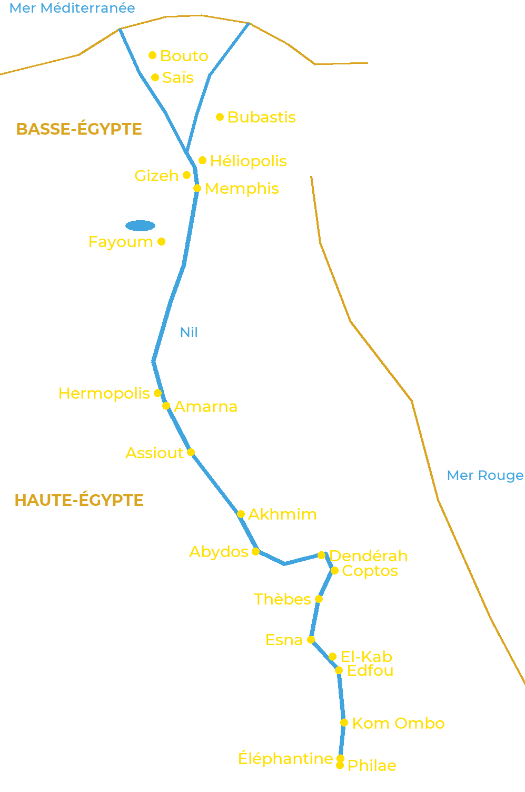

L’Égypte ancienne s’étirait le long du Nil, sur plus de mille kilomètres. Au nord, le fleuve se
divise en plusieurs bras pour former le delta : c’est la Basse-Égypte. Au sud s’étend la vallée,
la Haute-Égypte, jusqu’à la première cataracte, à Assouan. Chaque ville avait ses dieux, et les
plus grands centres religieux ont donné leur nom aux cosmogonies.

Les principaux centres de culte, du delta à la première cataracte
Basse-Égypte
Bouto : Ouadjet, la déesse cobra protectrice du Nord.
Saïs : Neith ; capitale de la XXVIe dynastie.
Bubastis : Bastet, dont Hérodote a décrit la grande fête.
Héliopolis : Atoum et Rê ; berceau de la cosmogonie la plus répandue.
Gizeh : les grandes pyramides et le Sphinx, vénéré comme Harmakhis.
Memphis : Ptah, Sekhmet, Nefertoum et le taureau Apis ; nécropole de Sokar à Saqqarah.
Fayoum : Sobek et ses crocodiles sacrés.
Haute-Égypte
Hermopolis : Thot et l’Ogdoade.
Amarna : Aton ; la capitale fondée par Akhenaton.
Assiout : Oupouaout, « celui qui ouvre les chemins ».
Akhmim et Coptos : Min, dieu de la fertilité et des pistes du désert.
Abydos : Osiris, dont on y célébrait les mystères.
Dendérah : Hathor.
Thèbes : Amon, Mout et Khonsou (Karnak et Louxor), Montou ; nécropoles royales de la rive ouest.
Esna : Khnoum, Neith et Heka.
El-Kab : Nekhbet, la déesse vautour protectrice du Sud.
Edfou : Horus.
Kom Ombo : Sobek et Horus l’Ancien, dans un temple double.
Éléphantine : Khnoum, Satis et Anouket, gardiens de la crue.
Philae : Isis, dont le temple resta ouvert jusqu’au VIe siècle.